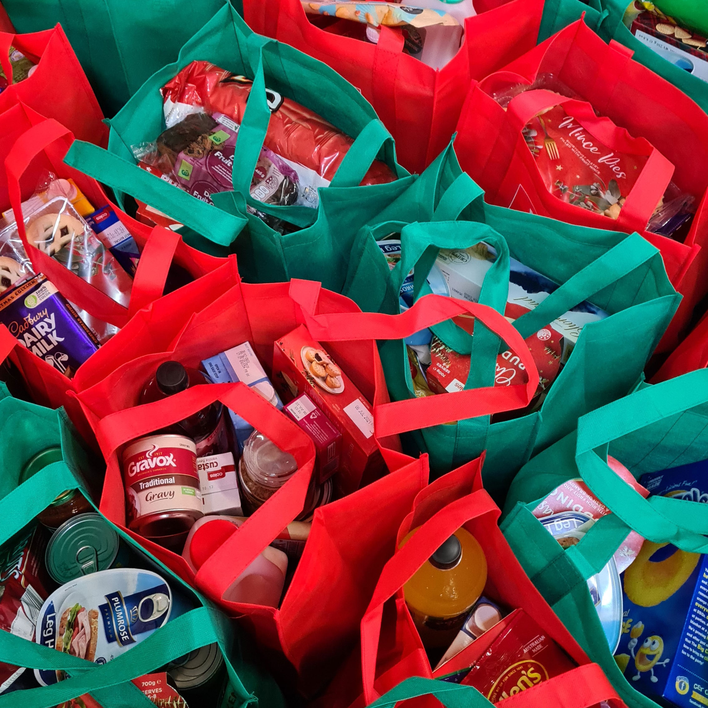

캠페인
>
캠페인 >
나눔이 필요한 이웃
나눔이 필요한 이웃
+ 총게시물:33[1/3]
| 번호 | 제목 | 글쓴이 | 등록일 | 조회수 |
|---|---|---|---|---|
| 33 | 다시 고시원으로 돌아가야 하는 할아버지의 눈물 | 관리자 | 2021-06-07 | 98 |
| 32 | 차별로 닫힌 마음의 문을 여는 장애인 원예교실 | 사회복지팀 | 2021-03-04 | 383 |
| 31 | 40년된 할머니의 집, 안전한 보금자리로 함께 만들어요. | 관리자 | 2021-01-11 | 490 |
| 30 | 어려운 이웃들에게 따뜻한 겨울을 선물해주세요. | 관리자 | 2020-11-16 | 611 |
| 29 | 반려견을 가족으로 삼은 취약계층에 대한 사랑의 응원 | 관리자 | 2020-08-20 | 663 |
| 28 | 독거어르신의 말 할 수 없는 비밀 | 사례관리팀 | 2020-08-20 | 368 |
| 27 | 저소득가정에 오색빛깔 필수 영양소를 전달해주세요!! | 사례관리팀 | 2020-07-21 | 696 |
| 26 | 차별로 닫힌 마음의 문을 여는 장애인 원예교실 | 사례관리팀 | 2020-04-23 | 901 |
| 25 | 코로나19 특별재난지역 대구의 취약계층을 도와주세요 | 관리자 | 2020-03-30 | 708 |
| 24 | 찬바람에 얼어버린 손보다 마음이 시린 우리이웃 | 관리자 | 2020-02-03 | 502 |
| 23 | 아이들의 꿈을 더해줄 교복을 지원해주세요! | 관리자 | 2020-07-10 | 523 |
| 22 | 설명절이 더 외로운 분들과 함께 나누고 싶어요!! | 관리자 | 2020-01-03 | 1095 |
| 21 | 우리동네 김장 나누기 | 사례관리팀 | 2019-09-23 | 947 |
| 20 | 미세먼지로 발목 잡힌 홀몸어르신의 건강을 지켜주세요. | 사례관리팀 | 2019-05-16 | 1128 |
| 19 | 한 달에 한 번 찾아오는 수현이의 고민 | 사례관리팀 | 2019-04-08 | 1540 |